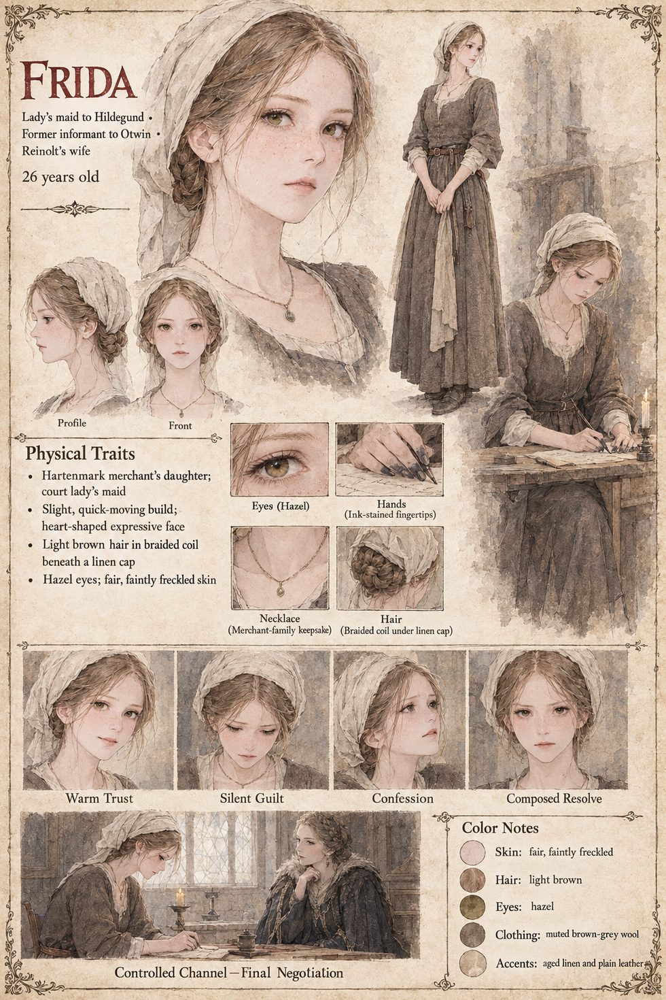

Frida
Chambermaid in Hartenmark's household, a merchant's daughter · Otwin's informant for nine years · counts in a nursery game of sums · later Reinolt's wife · 26 by her sheet
A merchant's daughter with a dowry too small for the husband her family wanted, and a memory, Hildegund will discover over the coming years, considerably better than her own. She has spent three years making herself quietly indispensable around Hartenmark's court when she is assigned to keep a strange half-royal guest's small room decent and her one good dress mended, and she counts under her breath when she thinks herself unobserved: not stairs or sacks but a merchants' nursery game in which every number is the sum of the two before it, one and one and two and three and five and eight, on as far as her patience carries. No one at that court thinks to ask what she is counting toward. It is Frida, not Ulrich or any of his ministers, who tells Hildegund the night after her first great public failure that she lost not because her numbers were wrong but because she recited them like a princess informing a room of her decision rather than a supplicant asking for its help. Hildegund never thinks to ask how a merchant's daughter with no formal education understands court persuasion so precisely, which is, of every arithmetic error she makes, the one she can least afford.
She is Otwin's. Her father's debts were bought up one at a time by his steward and forgiven on the day she entered the royal household, long before anyone had reason to think a princess would need watching, and she came to Hildegund's door, in her own account, by “the oldest accident of any court”. For nine years she is both a friend and an informant. She knows from the second year where Reinolt keeps his garden and never tells Otwin; she becomes the second-most-necessary person in Reinolt's narrowed world, a fact the servants of Hildegund's household have known, with the unerring certainty servants reserve for such secrets, for at least the last four of those nine years. Her first report to mention Reinolt's rides north, in Hildegund's fourth year, describes the end of them as a woodsman's hut; that winter a man of Otwin's comes, burns it and finds no one, and her later letter is much more careful about what it names.
When Hildegund plans her one private, unofficial errand north, Frida writes the letter anyway. She sits the better part of an evening with a blank page, telling herself that a routine note on a trivial errand is exactly what Otwin's network exists to record and never act on, and chooses to trust the version of Otwin she has spent nine years constructing for her own comfort over the version her judgment keeps insisting is also, and more plausibly, true. Twelve of his men come out of the trees; she makes one involuntary syllable of horror at the first blade clearing its sheath, not the horror of a woman surprised that violence is possible but of one whose fiction has just come apart; and she says nothing for the whole ride back to Hartenmark. Six days later her report to Otwin is longer and more honest than any she has sent, and carries, almost in passing, the single word the hermit gave them on the road.
She comes to Hildegund's door three nights after the Hush, in the hour reserved for conversations neither party wants to survive, having counted the stairs the old nursery way and run out of stairs at thirteen with nothing decided. She tells all of it in the flat, careful order of a rehearsed penance, including the sealed account in Otwin's strongroom, which will never leave it and which she has read three times. A memory that can hold a nursery sequence to its thirteenth term can hold forty lines of a physician's hedging, and she writes the account out from memory over a week of evenings, burning each draft in the grate. Hildegund's answer is a question, not forgiveness and not rage, and the next is colder: whether a woman who has spent nine years learning what a man like Otwin wants to hear might not be of more use to Hartenmark as a channel that is watched than as one that is closed. Frida agrees, understanding that she has traded one kind of service for another; every report afterwards is entirely true and entirely unhelpful to the man who receives it.
Telling it solves nothing. She had imagined the confession as an ending, a debt paid, and finds that saying it aloud only makes it permanently real. She never stops loving Hildegund enough to wish she had not been given the assignment, which she comes to understand is its own kind of unforgivable, since the years she would have to give back to undo it are the only years of her life she can honestly call happy. In the garden behind the old armory she answers Reinolt's one question with The whole of it, and the rosebush blooms the spring after they marry. The manuscript's Cast List calls her a chambermaid; the sheet's “lady's maid” is its own, as are its age of twenty-six, light-brown hair braided under a linen cap, hazel eyes, freckles and a small plain necklace.
“The whole of it.”
Appears In

Related Subjects


Related Records

In the rebuilt clearing, nine years on, Vara offers tea before chairs and lays river shrimp on a stone while Frida talks court gossip and Hildegund is nine years old again in every way that has nothing to do with age. Reinolt notices the birds go quiet first.

Twelve of Otwin's men come out of the tree line with no ceremony, and Frida, whose letter brought them, makes one involuntary syllable of horror. Vara does not test the water this time; two of Hildegund's own men-at-arms die, and none of the twelve walks back into the trees.

Behind the old armory Reinolt grows onions, mint and a stubborn rosebush that has never bloomed. Three days after her confession Frida finds him there, and he asks whether she loved him for the whole of it or only some smaller, harder-to-locate part.